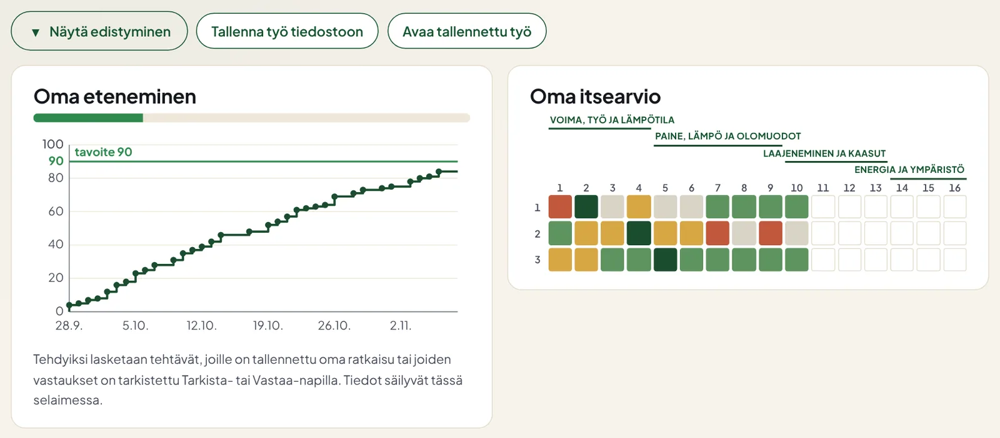
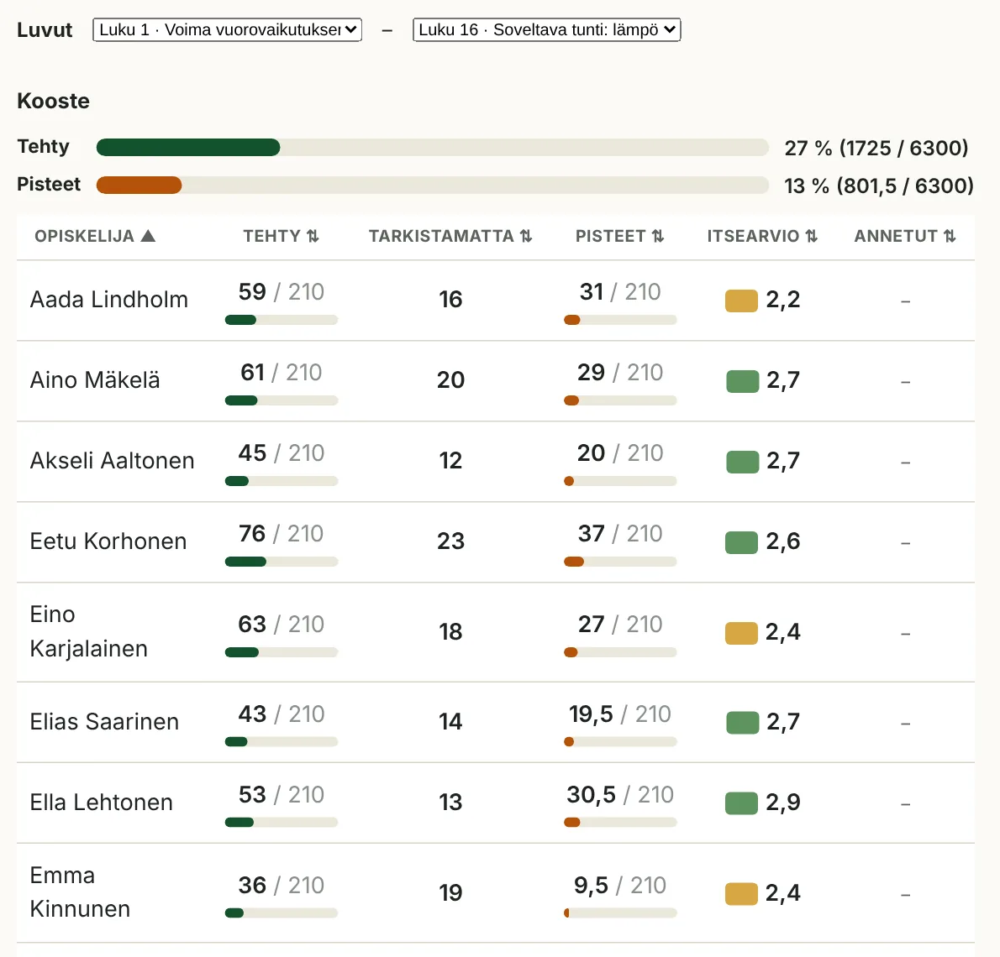
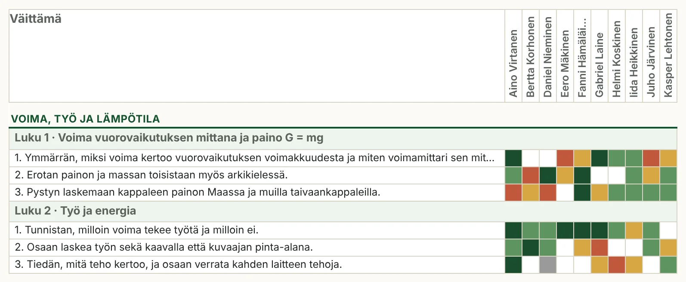
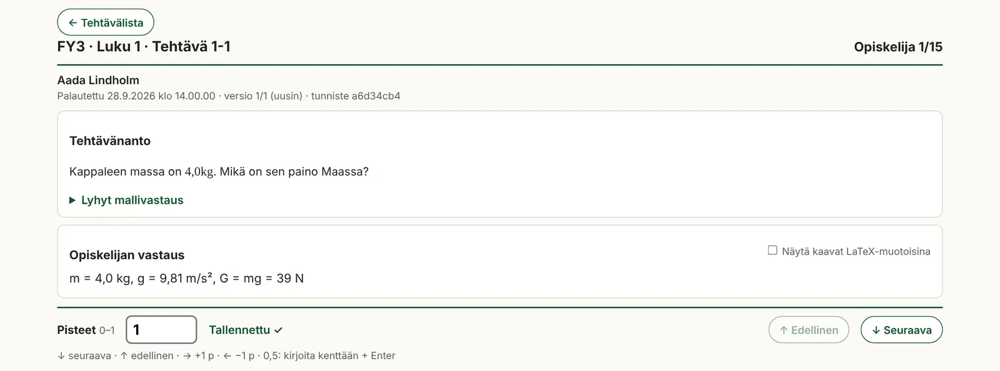

Työkalut
Opettajan työkalut: luokan näyttö ja palautusten arviointi omalla koneella.
Luokkanäyttö
Arviointityökalu
Ruukkilabran palautukset arvioidaan omalla koneella tällä erillisellä sivulla. Se ei käytä verkkoa, eikä mikään opiskelijan tieto tule Ruukkilabraan.
Lataa arviointisivu (arviointi-2026-27-p1.html)
Lataa uusin versio aina, kun se päivittyy. Pisteet ja tuodut palautukset säilyvät selaimessa, kun avaat uuden version samassa selaimessa.
Näin arvioit
- Tee jokaiselle ryhmälle oma Forms-lomake, jonka nimi alkaa ryhmällä (esim. FY3.2 lv 2026-27 Palauta ratkaisut), ja lisää sen linkki sivulle Palautukset · 1. periodi · lv 2026-27.
- Lataa Drivesta lomakkeen vastauskansio (File responses) zip-tiedostona.
- Avaa arviointisivu Chromessa tai Edgessä ja valitse Tuo tiedosto → zip.
- Valitse tehtävä ja arvioi sen ratkaisut peräkkäin: numerot 0 ja 1, nuolet ← → muuttavat pisteitä, ↓ ↑ vaihtavat opiskelijaa.
- Vie pisteet CSV-tiedostona ja tee varmuuskopio ryhmästä koulun Driveen.
Esimerkkejä



